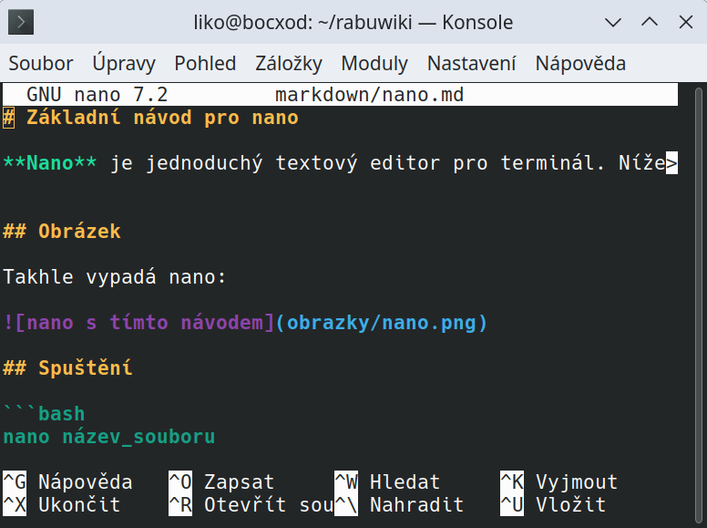

Základní návod pro nano
Nano je jednoduchý textový editor pro terminál. Níže jsou uvedeny základní příkazy, které ti pomohou začít.
Obrázek
Takhle vypadá nano:

Spuštění
```bash nano název_souboru
Pohyb v souboru Šipky: Pohyb kurzorem
Ctrl + _ + číslo řádku: Přejít na konkrétní řádek
Úpravy Piš text běžně jako v jiném editoru
Backspace nebo Delete: mazání znaků
Uložení a ukončení Ctrl + O: Uložit soubor (potvrď název Enterem)
Ctrl + X: Ukončit editor (pokud jsou neuložené změny, editor se zeptá)
Užitočné příkazy
| Klávesová zkratka | Akce |
| ----------------- | ---------------------------- |
| Ctrl + G | Nápověda |
| Ctrl + W | Hledat v souboru |
| Ctrl + K | Vyjmout řádek |
| Ctrl + U | Vložit řádek |
| Ctrl + \ | Nahradit (hledat a nahradit) |
| Ctrl + C | Zobrazit pozici kurzoru |
Tipy Nano automaticky nevytváří zálohy – ulož si práci často!
Při chybě použij Ctrl + C k přerušení příkazu nebo návratu
Editor nano je vhodný pro začátečníky i pokročilé, kteří potřebují rychlé úpravy přímo v terminálu.
🅰️ Nano – legenda Meta (M-) příkazů (Alt + …)
V editoru nano znamená M- klávesovou zkratku s Alt (tzv. „Meta“ klávesou). Níže jsou nejčastější z nich – i s popisem v češtině.
| Zkratka (M-…) | Klávesa | Význam (česky) |
|-----------------|---------------------|------------------------------------------|
| M-U | Alt + U | Vrátit poslední akci (Undo) |
| M-E | Alt + E | Přejít na konec slova |
| M-B | Alt + B | Přejít na začátek slova |
| M-6 | Alt + 6 | Kopírovat aktuální řádek (označení) |
| M-] | Alt + ] | Skok na konec bloku závorek |
| M-[ | Alt + [ | Skok na začátek bloku závorek |
| M-A | Alt + A | Spustit/ukončit označování (markování) |
| M-Y | Alt + Y | Přejít na začátek souboru |
| M-\\ | Alt + \\ | Přejít na začátek |
| M-/ | Alt + / | Přejít na konec souboru |
| M-T | Alt + T | Kontrola pravopisu (pokud je podpora) |
| M-V | Alt + V | Posun o stránku dolů (někdy PgDn) |
| M-^ | Alt + Shift + 6 | Začít označování (jiná varianta M-A) |
| M-Q | Alt + Q | Přeskočit zpět na předchozí výskyt |
| M-G | Alt + G | Přejít na konkrétní řádek |
| M-R | Alt + R | Vložit obsah jiného souboru |
| M-C | Alt + C | Zobrazit/skrýt počítadlo znaků a řádků |
📝 Některé zkratky se liší podle nastavení systému nebo klávesnice – pokud ti některé nefungují, zkus jiný terminál (např.
xtermnebognome-terminal).
🧪 Tip: Jak poznáš aktivní označení
Když zmáčkneš Alt + A, aktivuje se označování. Pomocí šipek označíš blok textu a pak:
Ctrl + K= vyjmeš (odstraníš) označený blokAlt + 6= zkopíruješ blokCtrl + U= vložíš blok
^ = Ctrl M- = Alt (Meta)
🧪 Tip pro otestování: Pokud si nejsi jistý, co zkratka dělá, klidně si otevři testovací soubor a vyzkoušej např.:
Alt + U → vrátí poslední změnu Alt + E → pohyb na konec řádku/slova Alt + A → označování textu (začne výběr)